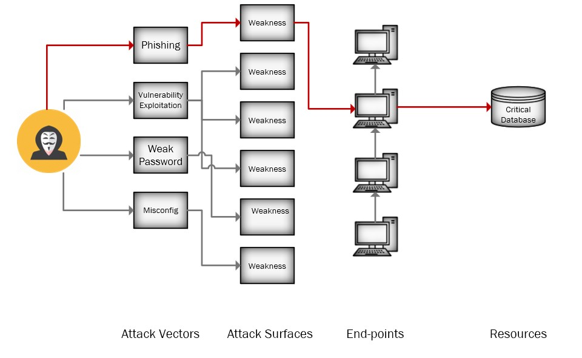
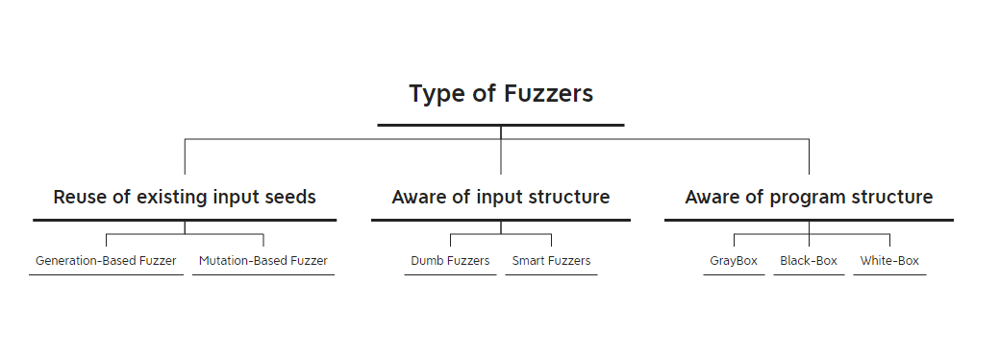

Fuzzer Internals - Part 1: Introduction to Fuzzers
Table of Contents
About this tutorial
I decided to study Fuzzers and in this way, I wanna teach what I learn through my research. Let’s get to it.
Software Security
Software security is a critical aspect of software development that focuses on safeguarding software applications from potential threats. This involves a set of practices that are integrated into the software development process to prevent unauthorized access, use, disclosure, disruption, modification, or destruction. Software security testing can be introduced at various organizations of:
- Research and Development (R&D)
- Test-Lab Environment
- Operation phase
Research and Development
The Research and Development (R&D) phase in software security and development is a critical stage where organizations invest time, resources, and effort to innovate and create new technologies, methodologies, and solutions to enhance the security of their software products. This phase is essential for staying ahead of emerging threats, improving existing security measures, and adopting the latest technologies to safeguard software applications.
Test-Lab Environment
Although most programmers conduct the first unit tests as part of the R&D phase, a test lab environment can be quite different from an R&D environment. In testing labs, a dedicated team usually handles the final testing after integrating the system. Depending on how software is developed, some testing is closely linked to the development process. The tests done in the lab can be quite different from those in the research and development phase.
Operation phase
Even after the application has been tested and released, it is imperative to adhere to post-development security practices. These practices may encompass the use of security scanners such as Nessus.
Security Incident
A security incident is an event that compromises the confidentiality, integrity, or availability (CIA Triad) of an information system or the data it contains. Security incidents can have serious consequences for organizations, such as financial losses, reputational damage, legal liabilities, and regulatory penalties.
Attack Vectors and Attack Surface
When it comes to keeping a system safe, two important things to understand are ‘Attack Vectors’ and ‘Attack Surface.’
The Attack Surface in a system is an indicator of system security. If a system has a larger attack surface, it will be more vulnerable to attacks, and by exploiting it, a hacker can penetrate the system and cause heavy damage such as deleting or manipulating data or adding malware to it. If the Attack Surface is smaller, the attacker must perform a more complex attack, and for this, the attacker must first map the entire system and all devices and their paths, and finally, identify and exploit potential vulnerabilities.
The Attack Vector is like the route hackers take to get into a system. Each route is a potential weakness, and there could be many of them. Every organization is different, so the path a hacker takes will depend on the specific conditions of that organization. Attack vectors are essentially the methods cybercriminals use to break into a system.

So, in simpler terms, the attack surface is the overall vulnerability of a system, and attack vectors are the ways hackers try to take advantage of those vulnerabilities to get access or steal information from your devices like laptops, phones, or servers.
Fuzzing
Fuzzing or Fuzz Testing is a testing technique that is used to discover problems related to a system by sending random inputs to that system. Generally, there are two different purposes to fuzz a system:
- Quality Assurance (QA): Testing and securing the internally developed software or system
- Vulnerability Assessment (VA): Testing and trying to break a software or system
A Brief History of Fuzzers
The term fuzz was first coined in 1988 by professor Barton Miller and his students at the University of Wisconsin, who used a simple command line fuzzer to test the reliability of Unix utilities. Since then, fuzzing has evolved into a sophisticated and widely used method for finding bugs and security flaws in various types of software, such as web browsers, network protocols, file formats, and operating systems.
Type of Fuzzers
Fuzzers can be classified in different ways. First, there are generation-based and mutation-based fuzzers. Generation-based fuzzers create inputs from scratch, while mutation-based ones modify existing inputs.
Second, fuzzers can be either dumb (unstructured) or smart (structured). Dumb fuzzers don’t understand the input structure, while smart ones do.
Lastly, fuzzers can be white-box, grey-box, or black-box. White-box fuzzers know the program structure, grey-box fuzzers have partial knowledge, and black-box fuzzers have no knowledge of it. These classifications help us choose the right approach to find and fix problems in software.

Challenges of Fuzzing
Typically, Fuzzing has three challenges and those are:
-
Setup: Establishing a comprehensive and effective fuzzing environment can be a significant challenge. This includes configuring the target system, setting up the necessary instrumentation, and ensuring proper integration with the testing infrastructure.
-
Data Analyzing: Managing and analyzing the vast amount of data generated during the fuzzing process can be daunting. Identifying meaningful patterns, understanding the root causes of issues, and prioritizing the most critical findings require robust data analysis techniques and tools.
-
Time: Fuzzing can be a time-consuming process, especially when dealing with complex software systems. The time required to achieve adequate code coverage, discover vulnerabilities, and generate meaningful results can be a limiting factor, particularly in time-sensitive development cycles. Efficient strategies for maximizing testing effectiveness within time constraints are essential.
References
comments powered by Disqus